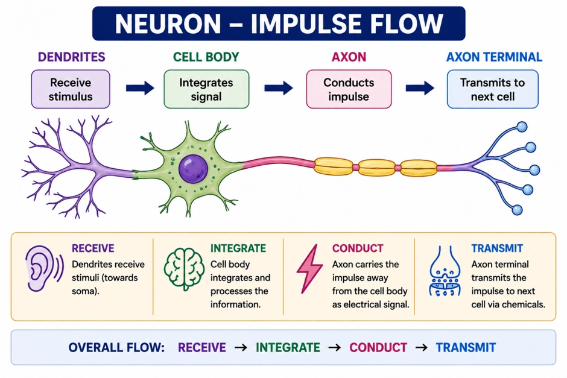
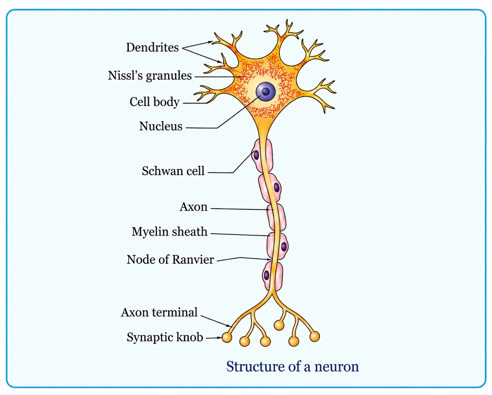
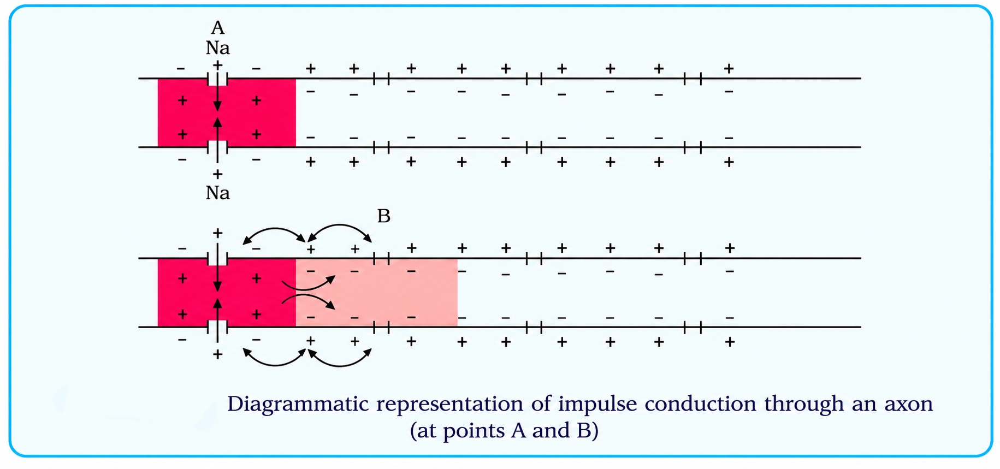
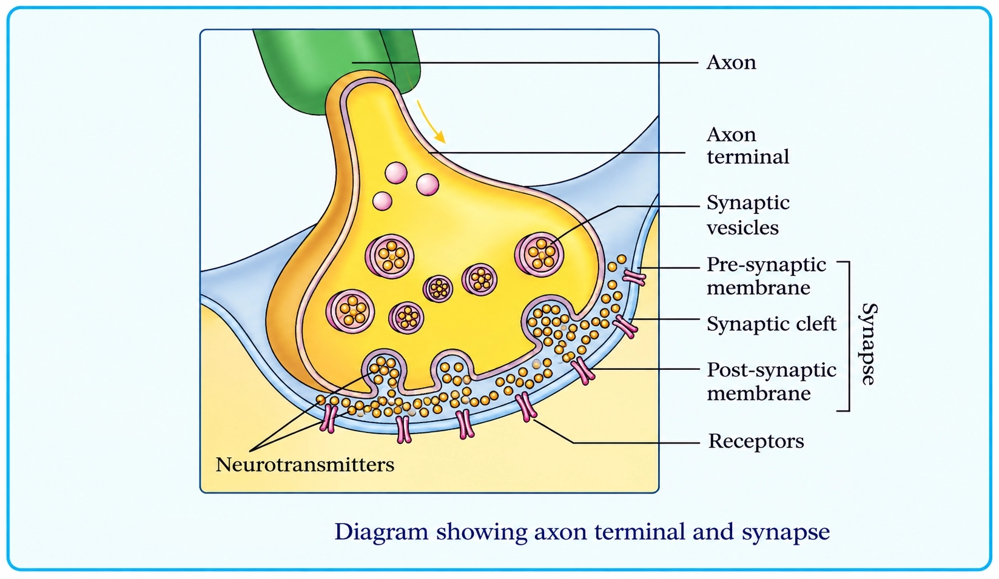
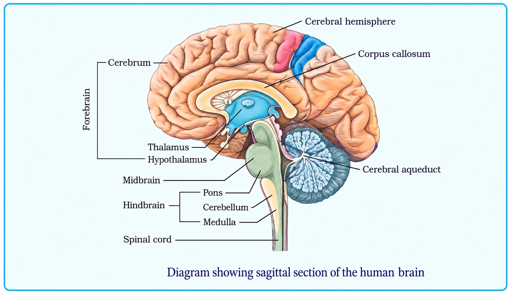
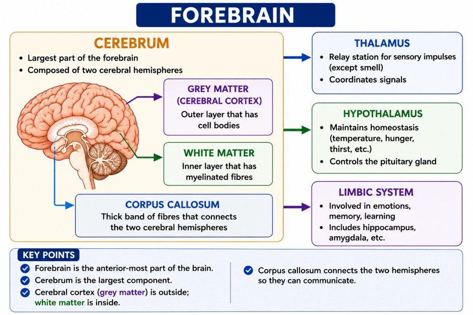
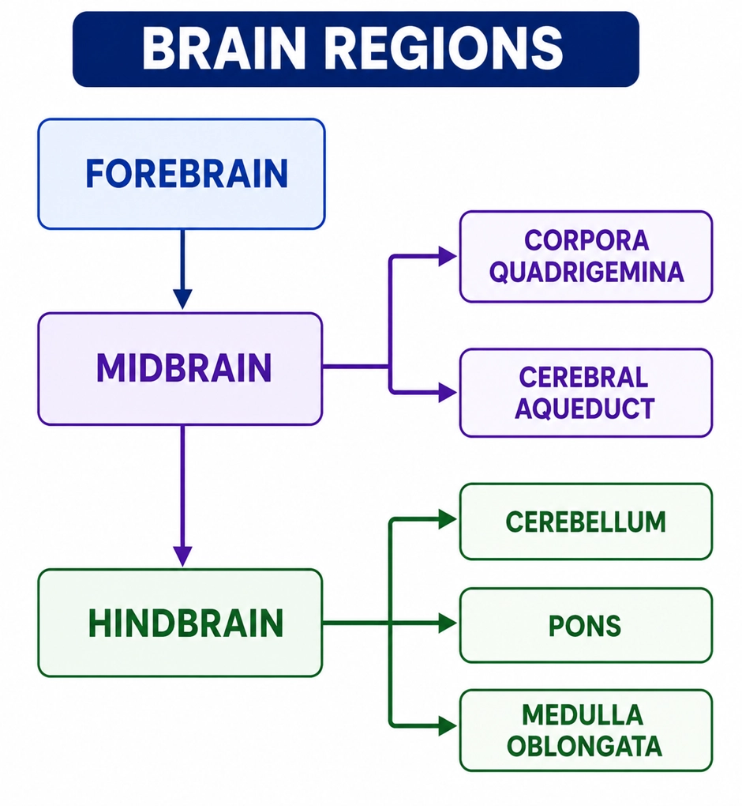

Biology
Neural Control and Coordination
Neural (fast) + endocrine (hormonal) control integrates organs to keep the internal environment stable
COORDINATION AND HOMEOSTASIS
📖Definition & Introduction
- Coordination is the process by which ≥2 organs interact to produce an integrated response.
- Homeostasis requires coordinated functioning of organ systems to maintain stable internal conditions.
- In humans, coordination is achieved by neural system and endocrine system working together.
- Neural control is typically rapid and point-to-point; endocrine control is slower and widespread via hormones.
- After a disturbance ends, body functions return toward normal by feedback-based regulation.
🖼️Diagram
Homeostasis is maintained by integrated neural and endocrine control of multiple effectors.
🎯Key Concepts
- 🧩Integrated response: multiple organs change together to meet a common body demand
- ⚡Neural system: rapid electrical impulses; precise and localized effects
- 🧪Endocrine system: chemical messages (hormones) in blood; longer-lasting effects
- 🔁Feedback regulation restores balance after change; prevents overshoot
- 🏃Exercise is a classic example of synchronised organ-system coordination
🔎EXERCISE: A STANDARD INTEGRATED RESPONSE
- Muscle activity increases → energy demand rises.
- To meet demand: oxygen supply increases via multiple coordinated changes.
- Lungs: respiration rate increases to take in more O2 and remove CO2.
- Heart: heart rate and force increase to pump more blood per minute.
- Blood vessels: blood flow redistributes to working muscles.
⚙️HOW NEURAL + ENDOCRINE TOGETHER MAINTAIN HOMEOSTASIS
- Stimulus detected → CNS integrates → effectors respond (neural pathway).
- Neural responses are immediate; useful for rapid adjustments during exercise.
- Hormones provide chemical integration; effects are often longer-lasting.
- Together they ensure synchronised functioning of organs, not isolated actions.
- Key idea: homeostasis is a dynamic steady state, not a fixed constant value.
⚖️Neural vs Endocrine Coordination (High-yield Differences)
| Basis | Neural system | Endocrine system |
|---|---|---|
| Signal type | Electrical impulses; chemical at synapses | Chemical hormones in blood |
| Speed | Fast (milliseconds) | Slower (seconds to hours) |
| Pathway | Point-to-point via neurons | Widespread via circulation |
| Specificity | Highly localized, precise | Often broad; only target cells respond |
| Duration | Usually short-lived | Usually longer-lasting |
| Typical role in homeostasis | Rapid adjustments (e.g., heart rate) | Sustained regulation (e.g., metabolism, growth) |
💡Memory Technique
“FAST vs LAST”
Neurons as specialised cells; neural organisation from Hydra to vertebrates
NEURAL SYSTEM BASICS
📖Definition & Introduction
- Neural system is made of specialised cells called neurons that coordinate body activities by rapid signalling.
- Neurons can detect stimuli, receive stimuli, and transmit them as nerve impulses.
- Neural coordination is typically fast and precise due to organised, point-to-point connections between cells.
- Across animal groups, neural organisation shows a trend from diffuse networks to centralised, complex systems.
- Basic functional pathway (exam form): stimulus → receptor → sensory neuron (afferent) → CNS (integration) → motor neuron (efferent) → effector → response.
🖼️Diagram

🎯Key Concepts
- ⚡Neurons are excitable cells: they convert stimuli into fast electrical signals called nerve impulses.
- 📩Dendrites receive input and carry impulses towards the cell body; the axon conducts impulses away to axon terminals/synaptic knobs across a synapse.
- 🕸️Hydra shows a nerve net: no centralised brain; impulses spread in a diffuse network.
- 🧩Insects show ganglia with a brain and segmental control; more organised than nerve nets.
- 🏛️Vertebrates have a highly centralised neural system (CNS: brain + spinal cord) with specialised control centres.
⚖️Neural organisation: Hydra vs Insects vs Vertebrates
| Basis | Hydra (lower invertebrate) | Insects | Vertebrates |
|---|---|---|---|
| Basic plan | Diffuse network (nerve net) | Brain + ganglia + nerve cords | Brain + spinal cord (CNS) with PNS nerves |
| Centralisation | Very low | Moderate (segmental ganglia) | High (strong central control) |
| Integration level | Simple, spread-out coordination | Better coordination via ganglia | Complex integration and specialised control |
| Exam keywords | Nerve net | Ganglia, brain | CNS (brain + spinal cord); highly developed |
💡Memory Technique
“Mnemonic: D-R-T + NET→GANG→CNS”
CNS vs PNS, impulse direction (afferent/efferent) & PNS subdivisions (somatic, autonomic, visceral as described)
HUMAN NERVOUS SYSTEM DIVISIONS
📖Definition & Introduction
- Human nervous system is divided into CNS and PNS for rapid coordination by nerve impulses.
- CNS = brain + spinal cord; main site of information processing, integration and control.
- PNS = all nerves of the body associated with CNS; links receptors and effectors to CNS.
- Afferent (sensory) fibres carry impulses towards CNS from tissues/organs.
- Efferent (motor/regulatory) fibres carry impulses away from CNS to muscles/glands/tissues.
- PNS is functionally classified into somatic (skeletal muscle control) and autonomic (involuntary organs). Visceral nervous system (as described here) is a PNS complex of nerves/fibres/ganglia/plexuses carrying impulses between viscera and CNS.
🖼️Diagram
🎯Key Concepts
- 🏛️CNS is the "command centre": integrates inputs and generates outputs via neural pathways.
- 🛣️PNS is the "wiring": nerves + ganglia that carry afferent and efferent signals.
- ⬅️Afferent = arrives at CNS (receptor → CNS).
- ➡️Efferent = exits CNS (CNS → effector).
- 💪Somatic NS: motor output mainly to skeletal muscles; controls voluntary movements and includes somatic reflex arcs.
- 🫀Autonomic NS: motor output to smooth muscle, cardiac muscle and glands; involuntary.
🔎PNS: FUNCTIONAL CLASSIFICATION
- Somatic NS: relays impulses from CNS to skeletal muscles; controls voluntary movements; includes somatic reflex arcs.
- Autonomic NS (ANS): relays impulses from CNS to involuntary organs (smooth muscle, cardiac muscle, glands).
- ANS has two divisions: sympathetic and parasympathetic; effects on an organ are often opposite to maintain homeostasis.
- Visceral nervous system (as described here): part of PNS comprising nerves, fibres, ganglia and plexuses through which impulses travel from CNS → viscera and from viscera → CNS.
⚙️DIRECTION OF IMPULSE FLOW (HIGH-YIELD)
- Afferent fibres: receptor/tissue/organ → CNS; represent sensory input to integration centres.
- Efferent fibres: CNS → effector (muscle/gland/tissue); represent motor/regulatory output.
- In answers, write arrows to avoid reversal: Afferent: → CNS; Efferent: CNS →.
- Typical pathway: receptor → afferent → CNS → efferent → effector.
⚖️Key Differences: CNS vs PNS (plus functional splits within PNS)
| Basis | CNS | PNS |
|---|---|---|
| Main parts | Brain and spinal cord | All nerves associated with CNS (with ganglia and plexuses) |
| Primary role | Information processing, integration and control | Communication link between CNS and the rest of the body |
| Role in pathway | Integrates sensory inputs and initiates motor/regulatory outputs | Carries sensory (afferent) impulses to CNS and motor/regulatory (efferent) impulses from CNS |
| Common exam phrasing | "Command and control" | "Wiring/network connecting body to CNS" |
| Functional divisions (PNS) | Not classified as somatic/autonomic | Somatic (skeletal muscle) and autonomic (involuntary organs); also "visceral nervous system" (as described in text) for viscera ↔ CNS impulses |
💡Memory Technique
“A & E Direction Trick”
Parts of a neuron, synaptic knobs & neurotransmitters, classification, myelination and nodes of Ranvier
NEURON STRUCTURE AND TYPES
📖Definition & Introduction
- Neuron is the structural and functional unit of nervous system that receives, integrates and transmits impulses.
- Main parts: cyton (cell body), dendrites, and axon with terminal branches.
- Dendrites carry impulses towards cyton; axon conducts impulse away from cyton.
- Axon ends form synaptic knobs containing synaptic vesicles with neurotransmitters.
- Myelin sheath is formed by Schwann cells in PNS (and oligodendrocytes in CNS); gaps in myelin are called nodes of Ranvier.
🖼️Diagram

🎯Key Concepts
- 🧫Cyton: metabolic/integration center; cytoplasm has typical organelles and Nissl's granules.
- 🌿Dendrites: short, repeatedly branched; contain Nissl's granules; input region of neuron.
- 🧵Axon: long fibre; output region; typically lacks Nissl's granules; ends in axon terminals that form synapses/neuromuscular junctions.
- 📦Synaptic knobs store neurotransmitters in vesicles; release produces excitatory or inhibitory effects.
- ⚡Myelinated fibres conduct faster via node-to-node (saltatory) conduction.
🔎PARTS & FUNCTIONS (WRITE-IN-EXAM POINTS)
- Cyton: nucleus + cytoplasm with organelles; integrates incoming signals; trophic/metabolic center.
- Nissl's granules (RER): present in cyton and dendrites; associated with protein synthesis.
- Dendrites: receive stimuli/impulses; conduct towards soma (input region).
- Axon hillock: trigger zone where action potential typically initiates.
- Axon terminals: synaptic knobs contact next neuron/effector at synapse or neuromuscular junction.
⚙️SYNAPTIC KNOBS, VESICLES & NEUROTRANSMITTERS
- Synaptic knob contains synaptic vesicles storing neurotransmitters.
- Impulse at terminal triggers neurotransmitter release into synaptic cleft (chemical synapse).
- Neurotransmitter binds specific receptors on postsynaptic membrane → ion channels open.
- Postsynaptic response may be excitatory (promotes firing) or inhibitory (reduces firing).
- Chemical synapse is typically one-way: release occurs only from presynaptic terminal.
⚖️Neuron Classification & Axon Types (High-yield)
| Basis | Type 1 | Type 2 |
|---|---|---|
| No. of processes | Multipolar: 1 axon + ≥2 dendrites | Bipolar: 1 axon + 1 dendrite |
| Typical location | Cerebral cortex | Retina of eye |
| Third type | Unipolar: cell body with a single process; common description is "usually in embryonic stage" (adult sensory neurons are often pseudounipolar) | — |
| Myelination | Myelinated: myelin sheath present; nodes of Ranvier present | Non-myelinated: no myelin sheath; axon may be enclosed within Schwann cell cytoplasm but without myelin wrapping; distinct nodes absent |
| Conduction | Saltatory (node-to-node); faster | Continuous; slower |
💡Memory Technique
“Mnemonic: De-Cy-Ax-Te (signal path)”
Resting potential → depolarisation (Na+ in) → repolarisation (K+ out) → impulse moves by local circuit
NERVE IMPULSE GENERATION
📖Definition & Introduction
- Nerve impulse (action potential) is a brief, reversible change in membrane potential due to regulated ion movement across axonal membrane.
- At rest, axonal membrane is polarised: outside positive, inside negative, due to ion gradients and selective permeability.
- Resting state: membrane more permeable to K+, nearly impermeable to Na+; intracellular proteins remain trapped (negative).
- Na+/K+ pump maintains ionic gradients by active transport: 3 Na+ out for every 2 K+ in.
- A stimulus opens Na+ channels locally, causing Na+ influx and depolarisation; polarity reverses at the excited site.
- Soon after, K+ permeability increases; K+ efflux repolarises the membrane, restoring resting polarity.
🖼️Diagram

🎯Key Concepts
- 🔋Resting (polarised) state: outside +, inside −; set by ion gradients + selective ion channels.
- 🚪Selective permeability: K+ leaks more easily; Na+ entry is restricted at rest.
- 🔁Na+/K+ pump: 3 Na+ out, 2 K+ in; maintains long-term gradients.
- ⬆️Depolarisation: sudden Na+ influx makes inside positive at the stimulated site.
- ⬇️Repolarisation: increased K+ efflux restores inside negativity at the excited site.
- ➡️Local circuit current: excited site A drives current to adjacent resting site B, triggering next action potential.
🔎RESTING (POLARISED) MEMBRANE: WHY INSIDE IS −
- Ion distribution: inside high K+, high negative proteins; outside high Na+, low K+.
- Resting permeability: K+ channels allow easier diffusion than Na+ channels.
- Negatively charged proteins are impermeable, contributing to inside negativity.
- Na+/K+ pump sustains gradients: 3 Na+ out : 2 K+ in (active transport).
⚙️ACTION POTENTIAL SEQUENCE + LOCAL CIRCUIT (A → B)
- Stimulus at site A opens Na+ channels → rapid Na+ influx → depolarisation (polarity reversal).
- Adjacent site B remains polarised briefly; potential difference drives local current.
- Inner surface current: A → B; outer surface current: B → A, completing the circuit.
- This current depolarises B to threshold, generating a new action potential at B.
- Na+ permeability rise is short-lived; then K+ permeability increases.
⚖️RESTING STATE vs DEPOLARISATION vs REPOLARISATION
| Basis | Resting (polarised) | Depolarisation (excited) | Repolarisation (return) |
|---|---|---|---|
| Dominant permeability | K+ high; Na+ nearly blocked | Na+ suddenly high | K+ rises |
| Main ion movement | Net K+ tendency outward; limited Na+ entry | Na+ influx | K+ efflux |
| Charge on membrane | Outside +, inside − | Outside −, inside + (at that site) | Returns to outside +, inside − |
| Key phrase to write | Polarised resting membrane | Polarity reversal at excited site | Restoration of resting potential |
💡Memory Technique
“Mnemonic: "Na IN to Fire, K OUT to Retire"”
Electrical vs chemical synapses; Ca2+-triggered neurotransmitter release → EPSP/IPSP → one-way conduction → termination
SYNAPTIC TRANSMISSION
📖Definition & Introduction
- Synapse = functional junction transmitting impulse from pre-synaptic neuron to post-synaptic cell.
- Formed by pre-synaptic membrane (axon terminal) and post-synaptic membrane (dendrite/soma/effector).
- Synaptic cleft may be absent in electrical synapse; present and fluid-filled in chemical synapse.
- Electrical synapse: direct ionic current flow between neurons; very fast; rare in our system.
- Chemical synapse: neurotransmitters cross cleft and bind specific receptors to generate a new potential.
🖼️Diagram

🎯Key Concepts
- ⚡Electrical synapse: membranes extremely close → current passes directly; faster than chemical; rare in our system.
- 🧪Chemical synapse: vesicular neurotransmitter release into cleft → receptor binding → ion channels open.
- 🧲Ca2+ entry into pre-synaptic terminal is the trigger for vesicle fusion and transmitter release.
- 📈EPSP: depolarizing post-synaptic potential, often due to Na+ entry; increases firing chance.
- 📉IPSP: hyperpolarizing post-synaptic potential, often due to Cl− entry or K+ exit; decreases firing chance.
- ➡️One-way conduction (chemical): neurotransmitter released only from pre-synaptic side; receptors on post-synaptic side.
🔎TYPES OF SYNAPSES (HIGH-YIELD DIFFERENCES)
- Electrical: membranes extremely close; ions pass directly; like continuous conduction.
- Electrical: always faster than chemical; rare in our system.
- Chemical: membranes separated by fluid-filled synaptic cleft; uses neurotransmitters.
- Chemical: produces EPSP or IPSP; enables complex integration (summation, modulation).
- Cleft statement is a trap: cleft is characteristic of chemical synapse, not mandatory for electrical.
⚙️CHEMICAL SYNAPTIC MECHANISM (STEPWISE FLOW)
- Action potential reaches pre-synaptic terminal (synaptic knob).
- Voltage-gated Ca2+ channels open → Ca2+ influx into terminal.
- Ca2+ triggers synaptic vesicle docking and fusion with pre-synaptic membrane.
- Neurotransmitter released by exocytosis into synaptic cleft.
- Neurotransmitter binds specific receptors on post-synaptic membrane.
⚖️Electrical Synapse vs Chemical Synapse
| Basis | Electrical synapse | Chemical synapse |
|---|---|---|
| Gap/cleft | Membranes extremely close; synaptic cleft effectively absent | Fluid-filled synaptic cleft present |
| Signal carrier | Direct ionic current flow | Neurotransmitter molecules |
| Speed | Very fast; faster than chemical | Slower than electrical (synaptic delay present) |
| Direction | Usually bidirectional (can be) | Functionally one-way (pre → post) |
| Occurrence in our system | Rare | Most common |
| Typical outcome | Passes excitation directly (impulse transmission like continuous conduction) | Can be excitatory (EPSP) or inhibitory (IPSP) |
💡Memory Technique
“Mnemonic: Causes Vesicles to Release”
Command-control organ: protected by skull + meninges; organized into forebrain, midbrain, hindbrain and brain stem
BRAIN PROTECTION AND DIVISIONS
📖Definition & Introduction
- Brain is the CNS command-and-control centre for processing information and regulating body activities.
- Protected by skull and three cranial meninges: dura mater, arachnoid, pia mater.
- Major divisions: forebrain, midbrain, hindbrain; functionally linked by the brain stem.
- Brain stem (midbrain + pons + medulla) forms the main connection between brain and spinal cord.
- Controls voluntary actions, balance, and vital involuntary functions (respiration, cardiovascular reflexes).
🖼️Diagram

🎯Key Concepts
- 🎛️Brain integrates sensory inputs and sends motor/autonomic outputs to coordinate organs.
- 🦴Skull provides rigid mechanical protection against external impacts.
- 🛡️Meninges protect and support the CNS; order is crucial for exam answers.
- 🧩Forebrain handles higher functions and homeostasis via cerebrum, thalamus, hypothalamus.
- 🔁Midbrain is a relay between forebrain and pons; has cerebral aqueduct and corpora quadrigemina.
- ❤️Medulla contains vital centres for breathing, cardiovascular reflexes and gastric secretions.
🔎CRANIAL MENINGES (OUTER → INNER)
- Dura mater: tough outer covering; strongest protective layer.
- Arachnoid: very thin middle layer; lies between dura and pia.
- Pia mater: delicate inner layer; closely adherent to brain tissue.
- Exam must-write order: Dura → Arachnoid → Pia.
⚙️MAJOR BRAIN DIVISIONS: WHAT TO ASSOCIATE
- Forebrain = cerebrum + thalamus + hypothalamus; higher functions and homeostasis control.
- Midbrain: between forebrain and pons; has cerebral aqueduct and corpora quadrigemina dorsally.
- Hindbrain = pons + cerebellum + medulla; coordination and vital involuntary control.
- Brain stem = midbrain + pons + medulla; main pathway between brain and spinal cord.
⚖️Forebrain vs Midbrain vs Hindbrain (high-yield map)
| Basis | Forebrain | Midbrain | Hindbrain |
|---|---|---|---|
| Main parts | Cerebrum, thalamus, hypothalamus | Cerebral aqueduct; corpora quadrigemina | Pons, cerebellum, medulla |
| Core role | Higher functions + sensory/motor integration + homeostasis | Relay and reflex centres; tract conduction | Coordination + vital involuntary centres |
| Typical exam cues | Corpus callosum; cortex (grey) vs inner white matter | Corpora quadrigemina (4 swellings) in dorsal midbrain | Medulla connected to spinal cord; respiration and cardiovascular reflexes |
💡Memory Technique
“Mnemonic: DAP + 3-2-3 Brain Map”
Cerebrum organisation + grey/white matter + cortical areas + thalamus–hypothalamus–limbic functions
FOREBRAIN FUNCTIONAL ANATOMY
📖Definition & Introduction
- Forebrain = cerebrum + thalamus + hypothalamus; centre for higher functions and internal regulation.
- Cerebrum is the largest brain part; a deep cleft divides it into left and right cerebral hemispheres.
- Hemispheres are connected by corpus callosum (tract of nerve fibres) for inter-hemispheric communication.
- Cerebral cortex is the outer layer, thrown into folds (gyri/sulci) to increase surface area and neuron count.
- Grey matter mainly = cortex (neuron cell bodies); white matter mainly = inner myelinated fibre tracts.
- Forebrain also includes limbic system (e.g., amygdala, hippocampus) linked to emotion, memory and motivation.
🖼️Diagram

🎯Key Concepts
- 🧩Cerebral cortex has motor, sensory and association areas for integrated behaviour.
- 🧵Corpus callosum = major commissural white-matter bundle connecting the two hemispheres.
- ⚪White matter looks white due to myelin; it carries long-range tracts within cerebrum.
- ⚫Grey matter is grey due to dense neuron cell bodies, dendrites and synapses in cortex.
- 🚦Thalamus is a major coordinating centre for sensory and motor signalling to cortex.
- 🌡️Hypothalamus controls homeostasis: temperature, hunger, thirst, autonomic outputs.
🔎CEREBRUM: ORGANISATION & CORTICAL AREAS
- Two cerebral hemispheres separated by longitudinal fissure; connected by corpus callosum.
- Cerebral cortex is highly folded; folds increase surface area for more cortical neurons.
- Motor areas: initiate and control voluntary movements (commands to skeletal muscles).
- Sensory areas: receive and process inputs like touch, pain, temperature, vision, hearing.
- Association areas: neither purely sensory nor motor; enable memory, communication, intersensory integration.
⚙️THALAMUS–HYPOTHALAMUS–LIMBIC: CORE ROLES
- Thalamus is a major coordinating/relay centre for sensory and motor signalling to cortex.
- Hypothalamus lies at base of thalamus; maintains homeostasis via autonomic regulation.
- Hypothalamic centres control body temperature, hunger (urge for eating) and thirst (urge for drinking).
- Hypothalamus contains neurosecretory cells releasing hypothalamic hormones (endocrine coordination).
- Limbic system = inner cerebrum + deep structures (notably amygdala, hippocampus).
⚖️GREY MATTER vs WHITE MATTER (CEREBRUM)
| Basis | Grey matter | White matter |
|---|---|---|
| Main location | Outer cerebral cortex | Inner cerebrum |
| Dominant components | Neuron cell bodies, dendrites, synapses | Myelinated axons (fibre tracts) |
| Appearance reason | Less myelin; cell bodies concentrated | Myelin gives opaque white look |
| Primary role (exam-usable) | Processing/integration at cortex | Fast conduction between regions |
💡Memory Technique
“Mnemonic: THAL = THroughput, HYPO = HYomeostasis”
Brainstem regions: key landmarks, pathways, reflex centres, and vital control
MIDBRAIN AND HINDBRAIN
📖Definition & Introduction
- Midbrain lies between forebrain (thalamus/hypothalamus) and pons; part of the brainstem.
- Midbrain contains the cerebral aqueduct, a narrow canal connecting the 3rd and 4th ventricles.
- Dorsal midbrain has corpora quadrigemina (four swellings): key visual and auditory reflex centres.
- Hindbrain includes pons, cerebellum, and medulla oblongata.
- Medulla continues with spinal cord and houses vital centres: respiration, cardiovascular reflexes, and gastric secretions.
🖼️Diagram

🎯Key Concepts
- 🧩Brainstem = midbrain + pons + medulla; main connection between brain and spinal cord.
- 🚰Cerebral aqueduct runs through midbrain; links 3rd ↔ 4th ventricle (CSF pathway).
- 👁️Superior colliculi (upper pair of corpora quadrigemina): visual reflexes (eye/head turning).
- 👂Inferior colliculi (lower pair): auditory reflexes (startle, orientation to sound).
- 🧵Pons has fibre tracts ("bridge") interconnecting brain regions; helps regulate breathing rhythm.
- 🎯Cerebellum is highly convoluted; coordinates posture, balance, and smooth precise movements.
🔎MIDBRAIN: LANDMARKS + REFLEX ROLE
- Cerebral aqueduct traverses midbrain; CSF passage between 3rd and 4th ventricles.
- Corpora quadrigemina = 4 dorsal lobes: superior (visual) + inferior (auditory).
- Reflex idea: sudden light/sound → midbrain centres → quick orienting movements of head/eyes.
- Midbrain also carries ascending/descending tracts between cerebrum and spinal cord.
⚙️HINDBRAIN: PONS, CEREBELLUM, MEDULLA (HIGH-YIELD FUNCTIONS)
- Pons: fibre tracts interconnect regions; works with medulla in regulating breathing rhythm.
- Cerebellum: highly convoluted cortex; posture, balance, and coordination/precision of voluntary movement.
- Medulla oblongata: continuous with spinal cord; contains vital centres.
- Medullary centres: respiration centre, cardiovascular reflexes, and control of gastric secretions.
- Brainstem damage can affect basic life-support functions (breathing, circulation).
⚖️MIDBRAIN vs PONS vs MEDULLA (Brainstem quick compare)
| Basis | Midbrain | Pons | Medulla oblongata |
|---|---|---|---|
| Major landmark | Cerebral aqueduct; corpora quadrigemina | Bridge-like fibre tracts | Continues with spinal cord |
| Core role | Reflex + relay pathways | Interconnects regions; supports respiratory rhythm | Vital centres + reflex control |
| High-yield functions | Visual/auditory reflexes (orientation) | Relay; breathing modulation | Respiration; cardiovascular reflexes; gastric secretions |
💡Memory Technique
“Mnemonic: Mi-Po-Me and 4Q”